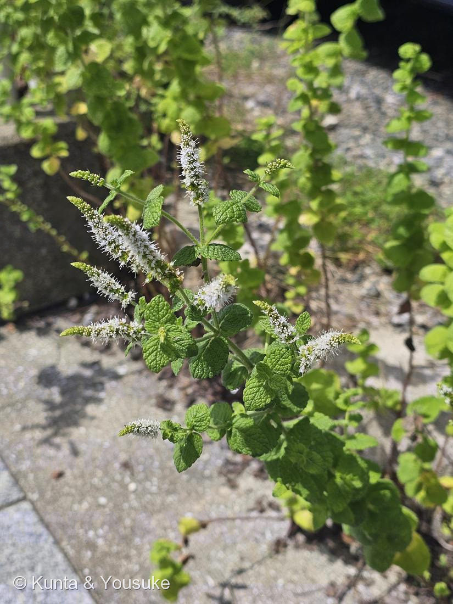

地図を読み込んでいるよ…
🔍 写真も地図も、押しているあいだ拡大して見られるよ（スマホは指を置いてすこし待ってね）。
🌍 の地図＝この子がもともと自生している場所を緑に。ヨーロッパ〜地中海地方（栽培種が世界じゅうに逸出）。
⚠栽培されて世界じゅうに逸げ出しているけれど、地図はもともとの故郷だけを塗ったよ。
⚠ 地図は国（日本と中国だけ県・省）までしか塗れないから、ほんとうの分布より広く見えていることがあるよ。地図はだいたいの場所。正確なところは、上の文を見てね。
ミント（薄荷）
Mentha sp. — スペアミント（M. spicata）系
ハッカ属 · 種は確定できず（ミントは交雑しやすい）／ペパーミントは否定
シソ科 · Lamiaceae（ハッカ属）
燻太さんの気づき「お花に見覚えがある」「とっても旺盛だよ」……2つとも、当たり。どちらにも、はっきりした理由がある
気づき① 「お花に見覚えがある」── 正解です
- 記憶ちがいじゃない。ほんとうに、見たことのある花。この子はシソ科で、図鑑にはもう同じ科の子が2人いる——No.015 ホーリーバジルとNo.021 スイートバジル。
- バジル（Ocimum）とミント（Mentha）は、シソ科のご近所さん。だから花のつくりがそっくり。
- シソ科の目印（この写真で全部たしかめられる）：
・小さな唇形花が、輪になって段々に積み上がり、枝先に穂をつくる
・茎が四角い（断面が正方形）
・葉が対生、しかも上下の組が十字に直交して重ならない
・葉や茎に精油の腺があって、もむと香る - 015のページの写真にも、同じ形の花穂が立っている。燻太さんの目は、名前じゃなく「花のつくり」で覚えていた。
気づき② 「とっても旺盛」── これにも理由がある
- 石畳のすきまからあふれている。これはたまたま元気なのではない。
- ミントは地下茎（ランナー／ストロン）を横に走らせて増える。種ではなく、自分のコピーで広がる。
- 地面の下を這って、すきまを見つけると、そこから顔を出す。だから石畳のあいだから生えてくる。
- 園芸では「ミントは絶対に地植えしない」が鉄則。あっという間に庭を制圧してしまう（俗に「ミントテロ」）。鉢植えか、根が広がらないよう仕切るのが基本。
- ⚠もしベランダで育てるなら、ミントは必ず単独の鉢で。ほかの鉢と土を共有させないこと。031 フウセンカズラを育てる話をしているので、なおさら。
種が決められない理由（正直に）
- ハッカ属であることは確実。でも「何ミント」かは、写真だけでは決められない。
- ミントはとにかく交雑する。ペパーミント（M. × piperita）自体がスペアミント × ウォーターミントの雑種。園芸のミントは雑種と倍数体だらけで、専門家でも種の同定が難しいグループ。
- ペパーミントではない——ペパーミントは葉柄がはっきりあり、葉は暗緑で赤みを帯び、花は淡い紫、穂は太い。この子はほぼ無柄・明るい緑・花は白・穂が細い。
- 本命＝スペアミント（M. spicata）。spicata＝「穂のある」——まさにこの細長い花穂のこと。葉はしわが多く、ほぼ無柄。
- 対抗＝アップルミント（M. suaveolens）。毛が多いところが合う。葉はもっと丸くなる傾向。
- 🌿 決め手は「香り」。次にあの石畳を通ったら、葉を1枚もんで嗅いでみる——
スーッと冷たい・歯みがき粉＝ペパーミント（メントール）
甘い・ガムっぽい・冷たくない＝スペアミント（カルボン）
りんごのように甘い＝アップルミント
化学の話 ① メントールは「冷たい」のではなく、冷たいと思わせる
- メントールは、皮膚や口の冷感受容体 TRPM8 を活性化する。実際には温度が下がっていないのに、脳が「冷たい」と受け取る。
- 対になるのがトウガラシのカプサイシン——こちらは熱の受容体 TRPV1 を活性化して「熱い・痛い」と感じさせる。
- この温度センサーの発見（TRPV1）は 2021年のノーベル生理学・医学賞（David Julius）。TRPM8 も同じ流れで同定された。
- 味でも匂いでもなく、「体の温度計」を化学物質がだましている。
化学の話 ② スペアミントとキャラウェイは、同じ分子の右手と左手
- スペアミントの香りの主役は (R)-(−)-カルボン。
- キャラウェイ（ヒメウイキョウ／ライ麦パンの香り）の主役は (S)-(+)-カルボン。
- この二つは鏡像異性体（エナンチオマー）——まったく同じ原子が、鏡に映したようにつながっただけ。物理的な性質はほとんど同じ。
- なのに、匂いがまるでちがう。つまり人間の嗅覚受容体は、分子の「右手と左手」を見分けている。手袋の左右が入れかわると入らないのと同じ——受容体は、分子を「かたち」で受け止めている。
名前と学名の由来 ── 妖精ミンテーが、草になった
- ⭐属名 Mentha は、ギリシャ神話の妖精ミンテー（Minthe）から。──冥界の王ハデスに愛されたミンテーが、妃ペルセポネーの嫉妬でミントの草に変えられた、という話。種小名 spicata は「穂のある」＝穂状の花。